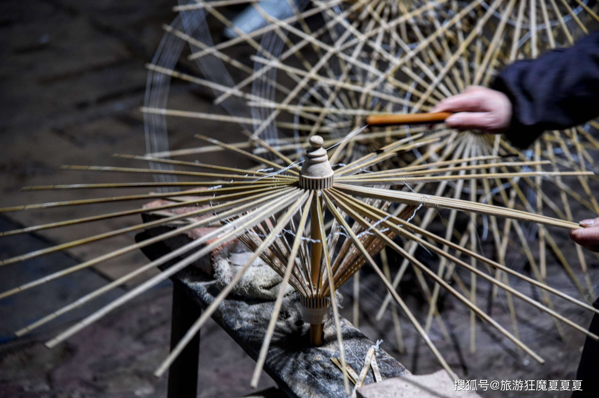
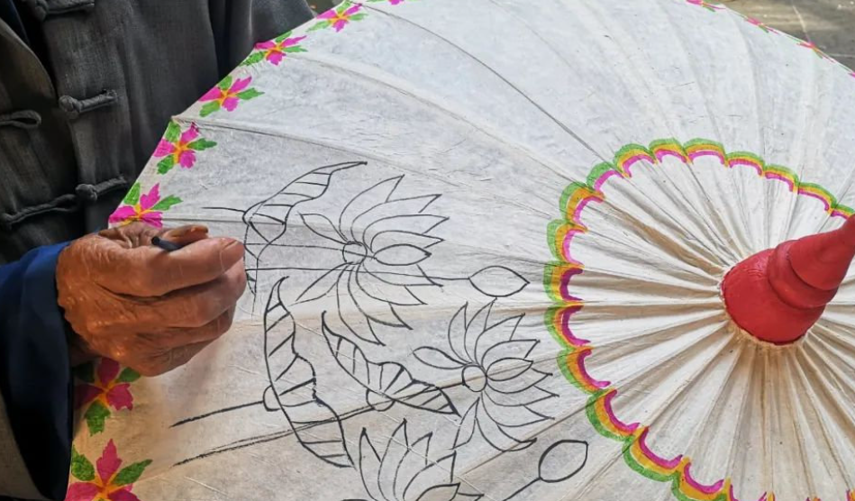
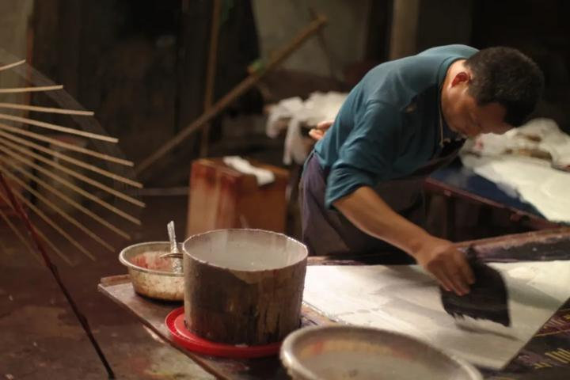
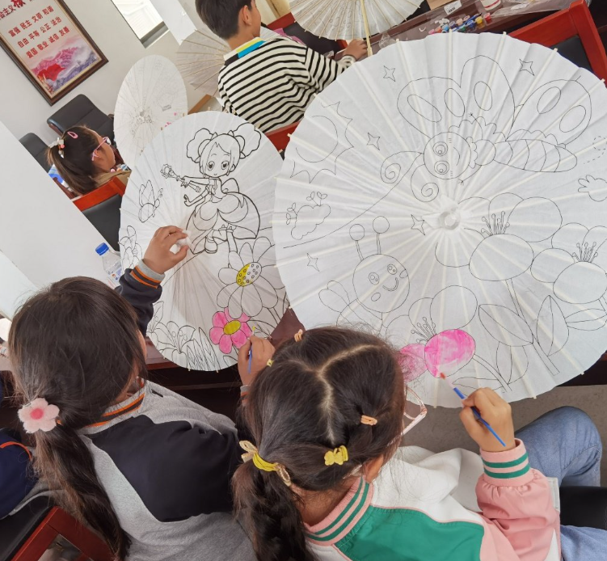
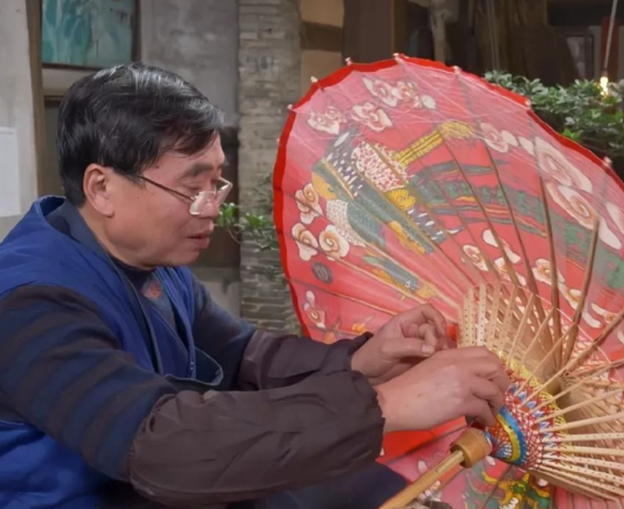
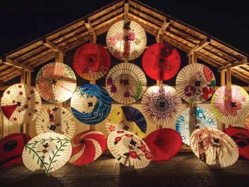

泸州油纸伞
泸州油纸伞
泸州油纸伞
泸州油纸伞
泸州油纸伞制作工艺是中国传统手工制伞技艺的集大成者，整套工艺包含上百道细碎工序，环环相扣、严谨精细，全程无机器替代、无化工原料，是纯天然、纯手工的传统技艺，每一道工序都承载着古人的匠心智慧。
选用川南生长三年以上的优质慈竹，质地坚韧、韧性十足。经过截竹、劈竹、烘烤、矫形、打磨、开槽等多道工序，制作出均匀规整、不易变形的伞骨，是油纸伞成型的核心基础。

采用特制手工皮纸，纸质轻薄却坚韧耐撕。匠人以传统米糊为粘合剂，分层、均匀裱糊在伞骨之上，多层叠加、反复压实，保证伞面平整紧致，做到不透风、不漏水、不变形。

使用纯天然熟桐油，多次均匀涂刷伞面，自然风干。桐油具备极佳的防水、防晒、防腐效果，可让油纸伞经久耐用，同时赋予伞面温润透亮的天然光泽，无任何化学添加剂。

待伞面干透后，匠人依据传统纹样或原创设计，手工手绘山水花鸟、吉祥图案、古风纹样。每一笔均为手工勾勒，纹样灵动自然，独一无二，赋予每把油纸伞专属的艺术生命力。

完成绘制后，进行伞柄、伞顶、伞穗组装，精细修边、打磨细节，检查开合松紧度，修正细微瑕疵，最终完成一把完整的古法泸州油纸伞制作。

全程纯手工制作、天然环保材质、工序繁复严谨，兼具实用性与艺术性。区别于工业雨伞，每一把非遗油纸伞都是不可复制的手工艺术品。
